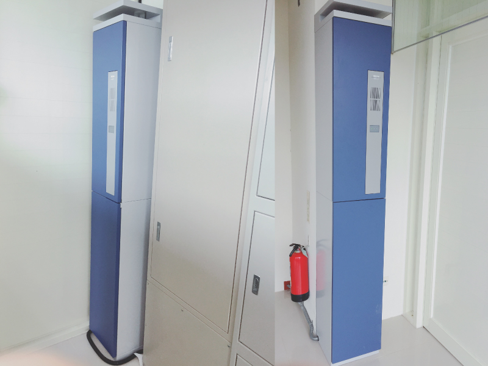
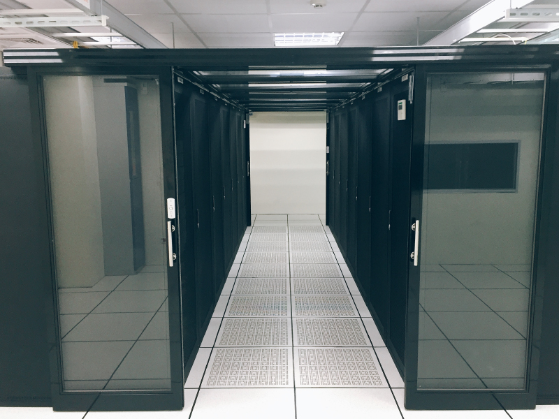
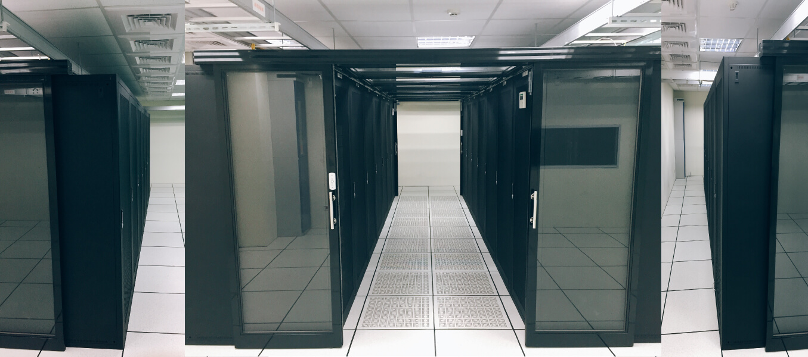
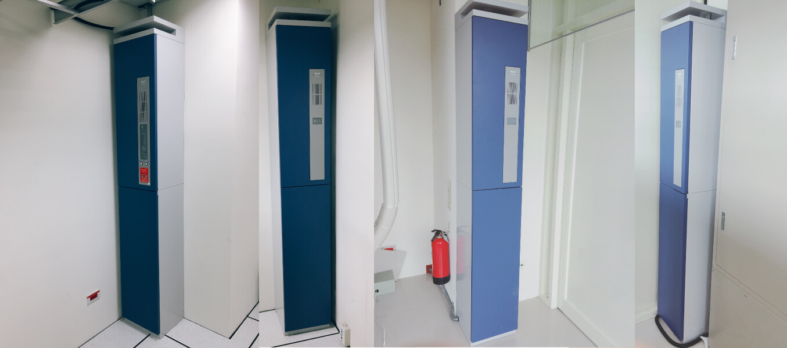
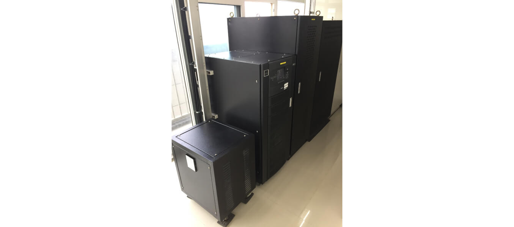
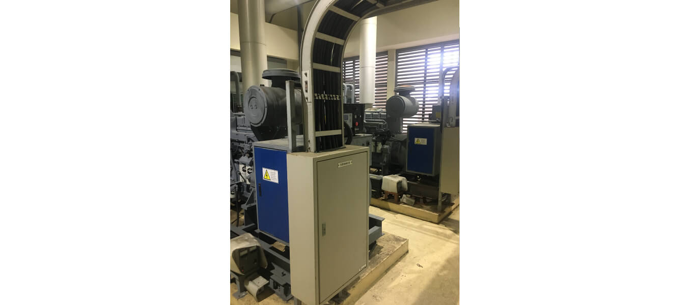
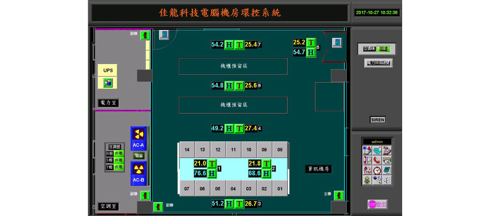
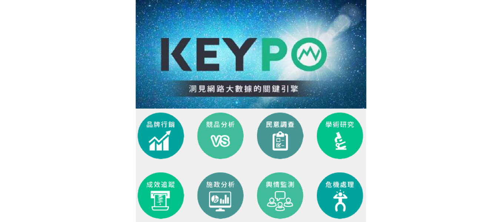

Big Data Center
A proactive operations and management consulting service built upon flexibility,
security, stability, and high performance.
IT Strategy Division
Since May 2010, SDTI’s Huanke Headquarters has established comprehensive facilities including centralized monitoring, vault-grade intelligent image recognition systems, and low-voltage infrastructure, supported by an international-standard data center.
This data center houses the company’s video surveillance, Siemens environmental control systems, big data analytics, ERP, email, and file servers, forming the technological backbone of SDTI’s operations.
During the development of these systems, SDTI’s IT Division collaborated with globally recognized technology leaders, laying the foundation for the company’s advancement into Industry 4.0 and the Internet of Things (IoT).
Leveraging these resources, the IT Department also provides outsourced IT services, including data center leasing, server hosting, and big data analytics. Beyond its environmental business, SDTI aims to deliver high-value IT strategy and consulting services to its clients.
The SDTI Big Data Center is composed of a team of experts specializing in server infrastructure, network architecture, and big data technologies, with over 18 years of hands-on industry experience.
Through proactive operations and management consulting services, the center offers professional planning and management for servers, network systems, information security, and data-driven marketing analytics, serving as a strong and reliable foundation for enterprises pursuing long-term stability and sustainable growth.
Building a Smart Environmental Recycling Factory and Certification System through ICT (Information and Communication Technology)
Big Data and IT Outsourcing Services
Local and Remote Data Backup with Information Security Protection
SDTI ensures the highest level of data protection and operational stability through RAID1 disk array architecture. Customizable backup and multi-restore point services allow for rapid data recovery in case of system failure. Regular security scans and assessments are conducted on servers, firewalls, and system software, with all major updates and firmware upgrades scheduled and verified to maintain a secure, stable, and resilient service environment.
Online Public Sentiment Analysis and Web Marketing Data Reports
SDTI continuously monitors web traffic and IP activity to ensure secure, legitimate visitor flow and defend against malicious attacks. Comprehensive data visualization reports reveal visitor demographics, time patterns, access platforms, and sentiment trends. Through integration with the KEYPO Big Data analytics platform, clients gain powerful insights into visitor behavior, competitor analysis, and marketing performance optimization.
N+1 Redundancy for Data Centers, Equipment, and Components
From first-class telecom facilities to every component used, SDTI provides full N+1 redundancy services without additional cost. A strict inventory and replacement management system ensures that equipment failures are addressed immediately—all replacements are completed within four hours by professional technicians. Regular hardware tuning and performance calibration further guarantee peak operational efficiency.
Server and Equipment Performance Monitoring, Reporting, and Management
SDTI’s 24/7 automated systems deliver proactive monitoring and management of your online services. Comprehensive system logs and performance reports ensure transparency and reliability, while businesses can reduce infrastructure and labor costs by entrusting SDTI with their IT operations — focusing instead on their core strategic growth.
Customized Architecture Planning, Deployment, Migration, and Operations Management
With SDTI, you gain access to an expert team of technical engineers, customer service specialists, and strategic consultants. We design and implement tailored server and network architectures, manage deployment schedules, and recommend optimized software, security, and marketing solutions. By leveraging vulnerability scanning, security defense systems, and automated data analytics, SDTI empowers your enterprise to enhance digital infrastructure and accelerate business growth.
IT Data Center Outsourcing, Planning, and Big Data Marketing Analytics Consulting
Email:mis@sdti.com.tw
TEL: 886-3-473-6566 ext. 2621 — Mr. Wang

Service Specifications
Item
Specification Details
Rack Specifications
"19” standard rack (W: 48.26 cm; D: 90 cm); 42U height (1U ≈ 4.45 cm)."
Available Plans
Full rack 42U; half rack 21U; one-third rack 12U; 4U (minimum rental unit).
Dedicated Bidirectional Bandwidth
1 Mbps (1024 Kbps) and above, adjustable based on customer requirements.
Server IP Allocation
Configuration varies depending on the selected plan.
Rack Power Configuration
AC110V / AC220V (10–30A) power outlets.
Network Equipment Configuration
100/1000BaseT RJ45,100/1000 Fast Ethernet Port。
IDC Data Center
Server placement options available based on customer requirements.

International-Standard IDC Facility
SDTI Big Data Center provides an internationally certified facility with dual redundant hardware systems to enhance server stability and ensure fast, secure connectivity.
Temperature & Humidity Controlled, Low-Dust Environment
Powered by two independent substations and equipped with dual-redundant air conditioning systems to reduce downtime risks and extend equipment lifespan.
High-Speed Optical Fiber Backbone
Connected via high-speed fiber backbone, providing stable domestic and international network access. Connectivity is tested to ensure performance meets enterprise standards.
Comprehensive Data Center Security
24/7 security guards, controlled access verification, fingerprint identification, and multi-level security systems ensure complete data protection.
Flexible Bandwidth Management
Bandwidth resources can be dynamically adjusted based on real-time server usage, preventing service interruptions and ensuring optimal performance.
Server Information Security Support
Equipped with advanced firewalls, IPS/IDS systems, DDoS mitigation, and full technical consulting and support services.
Data Center Overview
Hot and Cold Aisle Energy-Efficient Standard Data Center

Gaseous Fire Suppression System

Emerson UPS Uninterruptible Power Supply System, 90 kVA (3 × 30 kW)

Two CUMMINS Diesel Generator Sets, 600 kW Each

Proactive Data Center Infrastructure Monitoring System (DCIM)

Online Public Opinion • Data Analytics • Collective Intelligence
